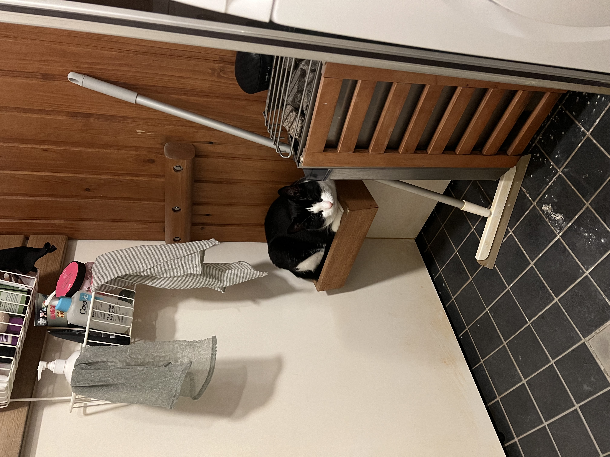

The Sauna Supervisor
This is my first independent webpage created for the Basics of Web Development course. For this assignment, I decided to feature a photo of my cat.

As you can see, he found a very specific place to chill: a small wooden shelf in the bathroom, right next to the sauna heater. Cats always know where to find the warmest spots!